The Fertility of the Earth,
Learning from the Benandanti
Scena
d' Apertura
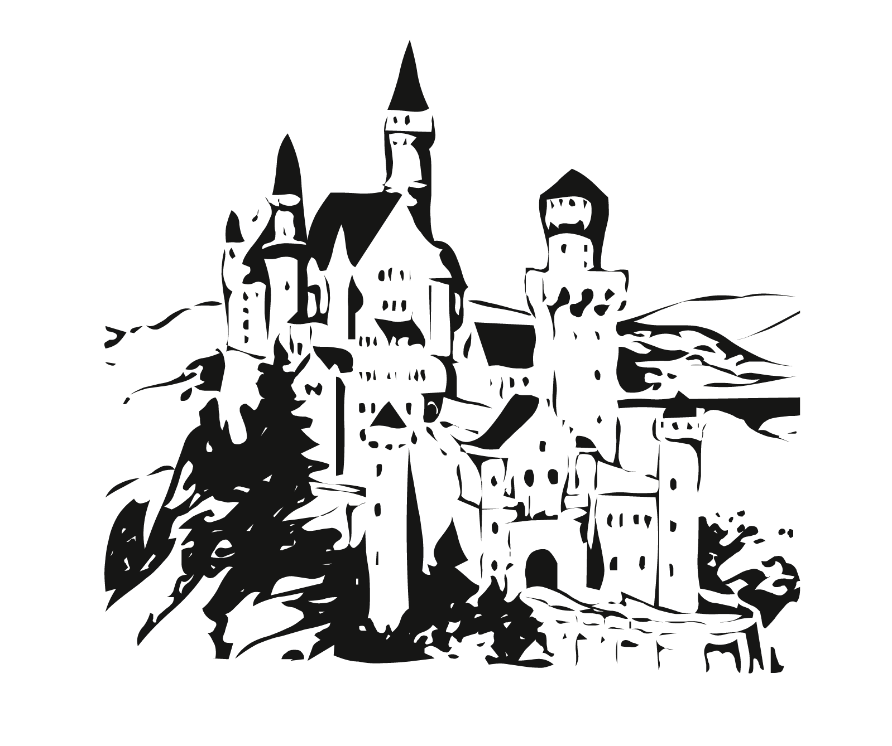
[At the sides of a rural road I see a young boy playing with his dog,
and an odd old man, sitting on the ground, confused]
“Young man, what year do we find ourselves in?”
“We’re in 2020.”
“Four hundred years have gone by…”
“Excuse me Sir, who are you?”
“There should be no word to define those like us.
So much has changed. Back in the old days we used to care for the little things, battling four times a year equipped with bundles of fennel we fought against dark witches attempting to protect the earth and to guarantee its fertility. Remember boy, fertile is the soil as well as our relationship with it. But we were not bound to last, young man.
There has always been someone bigger than us, running on the path of power, promising a shiny destination to whoever followed.”
“And in the end, did you follow too?”
“My people always chose to stay, not to follow any other path. Remember young man, sometimes when you chase something you don’t know how it looks like, it is hard to know when you will find it...
No, we did not follow. Instead we’ve been relegated to the Archives, repressed within our own skins. We have been sent to the afterlife, for an unknown reason, at least unknown to us.”
“But if you’re dead, how come you are still here?”
“There are values that last longer than laws, symbols that took roots, rituals that are intrinsic in the human body, connections that are worth more than gold. Have you ever asked yourself why cults never really die?”
“Why did you not die?”
“Patterns evolve throughout time and space; if the human nature is dualistic, its drive must be too. While someone strives for fame, power or wealth, someone else is looking for awareness, knowledge and balance.
Certain kinds of rituals, traditions and beliefs are always recurring… How do the essence of spiritual tribes, cults and cultures that have been erased by great powers, survive throughout time?”
Working Hands
and Flowers
in Their Hearts
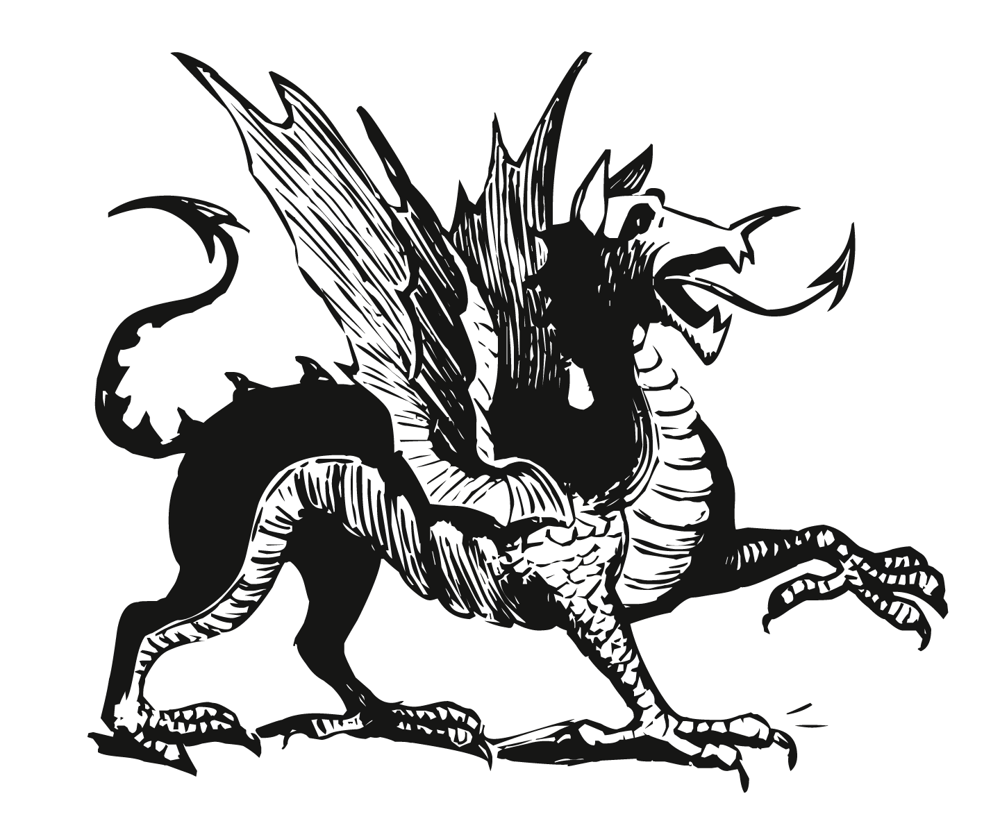
[Fascinated by the man’s story, I ask for more details…
And so we start walking, towards the fields]
I am home for the summer holidays, in Italy.
As I am wandering in this sea of grass surrounded by oaks, bamboos, cherry, apple and fig-trees, I look around and right next to me I see a couple of fennel plants.
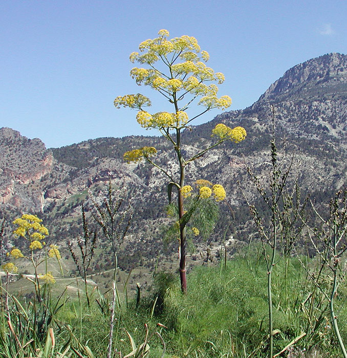
Wild fennel growing in the mountains.
Wild fennel can be eaten fresh, but to have supplies for the winter it is necessary to dry it.
Looking at them reminds me of how, a handful of centuries ago, these plants had a totally different value and purpose. Fennel, with bright green stems and golden flowers, is considered an herb with ancient medicinal properties, as well as carminative properties and it is used in French and Italian cuisine as an aromatic herb.
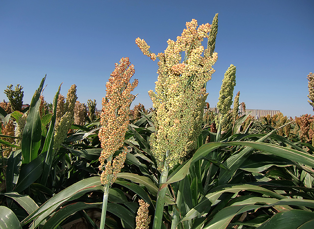
Sorghum Vulgare.
Together with another plant called Sorghum — a more common and strong ‘weed’ with wax-covered stems and tiny dark flowers, very resistant to drought and heat used in the production of edible oil, biofuel, and ethanol — in the 16th century, possibly even right on the same field where I am in Italy, these plants were much more than that, they were weapons, used in spiritual battles by a silent cult that I felt the need to dig up and share right here, together with their fascinating rituals, hermetic knowledge and sincere essence.
In my hometown — a quiet village called Percoto, right in the middle of a triangle of very historical cities, Udine, Cividale and Palmanova, surrounded by mountains and sea — right in here, I re-discover myself every time I go back. I get to connect more and more with nature, discovering parts of my cultural heritage that have been dormant up to that moment. I recover this feeling of belonging that in here, the Netherlands, got somehow lost. And it wakes me up. It makes me think, and I always want more of this beautiful place called Friuli.
I want to be there, discovering parts of the land that I did not get to see yet, relocating my centre within the simplest and most basic needs, balance and tranquility.
The history of my region helps me do that, and once I am
aware of the past, I can look at this place with a new encouraged perspective.
In Friuli, between the 16th and the 17th century, a nucleus of popular beliefs called Benandanti — which translates to english as well-farers — was part of the peasant society. The Benandanti and their ideologies on the fertility of the earth, lived under the watchful eye of the Catholic Church until they were slowly and gradually portrayed and tested by the Inquisitorial power, with trials and convictions for witchcraft. The Inquisition came between the middle and end of 16th Century in an area called Valli del Natisone.
The smart persistence of Inquisitorial figures and their vaguely insinuating queries opened up a portal towards the most distorted vision of this group of people, finally placing them within diabolical attributes.
This pagan cult had absolutely nothing to do with witchcraft or devilish traditions, instead, the Benandanti’s practice can be associated with pre-Christian Shamanism, and had a holistic vision of the earth carrying great agricultural knowledge. This knowledge was eventually silenced throughout the centuries, and we must think of a popular knowledge, where traditional and folkloristic elements of the group could have added to the bigger historical picture of this piece of earth which I call my paîs.

Guazzo, Francesco Maria. Witches dancing with the Devil, illustration from 'Compendium Maleficarum'. Italian School. 1608. Woodcut.
«It is demonization that has dispersed the primitive foundations from which the motif of the sylvan being, capable of impersonating the link between Nature and Culture, took shape. The connection between wild man and the universe of devils, mediated by a whole series of other evil creatures, still appears to be largely conditioned by the consciousness of sin embodied in a figure that is no longer human and relegated, in terms of appearance and behaviour, to the rank of a beast.»
Quote from Maculotti, Marco. Da Pan al Diavolo: la ‘demonizzazione’ e la rimozione degli antichi culti europei. 2016. Online.
In March 1965, an Italian historian, Carlo Ginzburg, at the end of his studies at the Scuola Normale Superiore in Pisa, wrote a thesis that had for subject the Benandanti. He researched throughout many Archives between Venice, Milan and Dublin, but mostly within the Friulian region, in a city called Udine. There, he consulted the city archive, the library and the archives of the Archiepiscopal Curia. His thesis is a collection of trial confessions that took place between 1574 and 1580 in Valli del Natisone, and a very important document for the memory of the Benandanti’s history.
So yes, we may think of a knowledge that could have added to Friuli’s bigger historical picture, but we also must think of a knowledge that could serve contemporary purposes and design the mirrored image of the 2020’s Friulian Society: a society that I constantly observe, a society that, as well as many others, has lost connection with its generous land, preferring digital company over a breath of fresh air.
Intentions
With the structure of a portrait in mind, in the foreground I see their relationship with Nature.
When reading the earlier confessions I see images that I could define “visionary”, stories whose balance between fact and fiction seems extremely wobbly at first. Stories perhaps formulated metaphorically but whose fantasy finds a real counterpart in the plane of reality.
So in the first chapter of my thesis, I will dig into their hermetic knowledge and connections with Shamanism, narrating their relationships with Nature and their willingness to die for it.
Only in the background of this painting, my mind finds space for the Inquisitors, but they are moving fast towards me. While initially questioning the group of people, their quick prejudice takes over and begins to manipulate the image of the Benandanti, their beliefs and practices, according to what seemed wicked and demoniac at the time.
This will be the subject of the second chapter, a series of events leading to a breakthrough that turned the Benandanti’s beneficial intentions into dark sorcery, that will explain how this kind of knowledge has been colonized, while asking myself why these types of knowledge always get silenced.
In the third chapter I will reflect and investigate on how the colonization of ancient knowledge reflected on our society’s values and behaviours, finally framing this moving portrait with reflections on the metaphorical meaning of “fertility” and its interpretations.
Did something that seems so far back in the past survived, perhaps embedded in our sleeping memory? If a kind of knowledge like this would have survived and applied in everyday actions, what would our society look like?
I would think that the resilience of a culture is cuffed to the carriers’ loyalty to the culture itself, but how can the cultural value of any popular heritage try to remain untouched if sources of power — religious, political, etc — claims the right to devour it?
In a region whose soil is so rich and could provide for “any” man’s desirable goods, people selfishly transcend reality and find shelter in digital comfort, forgetting the simplest and purest values of humanity.
There are many stories like the one I am about to tell you, from all over the world, they carry great enchantment and resilience, and at this point I must ask myself...
How did it happen that nowadays everything and everyone seems so distantly scattered, soul-less?
The disenchantment of the world means the extirpation of animism.
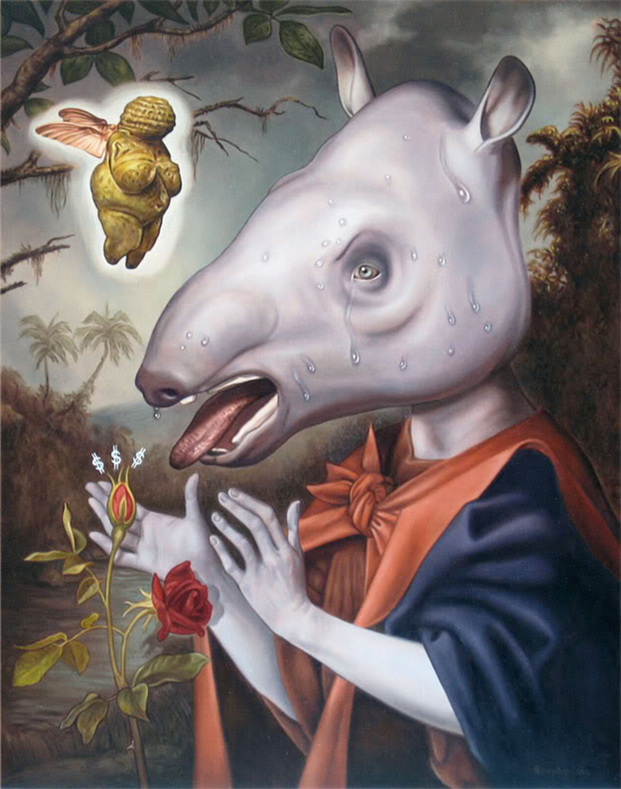
Brophy, John. Animism Regions. 2013. Surrealist Painting.
Chapter
Zero
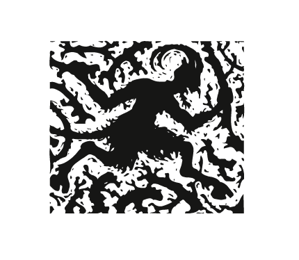
[As I look at the landscape I start to notice all of the oppositions, the shadows and lights, the higher and lower, the movement and the stillness]
In Chapter Zero I’d like to introduce a key concept that will recurr throughout the whole thesis: dualism.
Anselm Franke in his Much Trouble in the Transportation of Souls: the Sudden Disorganisation of Boundaries wrote:
The price paid by the moderns for cutting off their social ties to nature was that this nature, […] lost its meaning; what they gained was the belief in the universality of knowledge, and, above all, the freedom to manipulate and mobilize nature in ways unthinkable in pre-modern contexts.
He also talks about The Great Divide which is most likely a power that separates modern and pre-modern.
On one side we find civilization (rationality, progress), on the other hand we find anything that’s primitive and archaic (colonized, things of the past).
A very specific distinction between scientific rationality and spiritual beliefs. The Benandanti phenomenon would be considered ‘primitive’ by modernists, since it’s rooted in popular beliefs, and carries major traits of shamanism and spirituality, nonetheless it was considered as such also centuries ago by the Church. The Great Divide, this power that more than anything wants to impose duality over every thought, belonged to the Christian Church, the Church that promoted the Crusades, established the Index Librorum Prohibitorum, and burnt women at the stake.
The result of this dualism was a psychological war, which continues to exist nowadays.
Why whenever someone doesn’t belong to the same ‘school of thought’ as our own, this person is automatically labeled as different, stupid, insane, mad? Is anyone really allowed to think differently? I am not sure what the answer could be, and this extreme separation of thoughts makes me think of another quote from Anselm Franke that refers to Michel Foucault’s History of Madness, who tries to capture the earlier moment before intentional separation was created, generating opposition and contrast.
He attempts to return to the gesture of partition, […], the original grip by which reason confined unreason in order to wrest its secrets, its truth, away from it.
In the same way Foucault approaches and explains the history of madness starting from where madness and reason were still united, where there was no conflict, I ask you reader, to navigate with no boundaries thought this story.
Let your imagination bring you to places where you do not define nor judge creatures and their actions, but instead try to wind yourself into their essence and grasp their intentions.

Catoptrum Meteorographicum (The Depiction of Meteorological Divination), Robert Fludd, 16th Century. Fludd stratifies this chart into three basic sections representing a cause, an effect and a consequence – the cause being God and His spiritual world, the effect being the created world and, in this context, the consequence being the effect upon incarnated mankind.

First Television Picture from Space, Weather Tiros I Satellite, April 1st, 1960.
I am placing these two images next to each other in this chapter to visually express the duality embedded in our species and society. Even if these two images showcase a completely different approach and historical time, they aim for the same result.
The contemporary solid conflict between science and spirituality seems therefore meaningless.
Hopping Barefoot,
Suspended Halfway
Between Clouds
and Flames
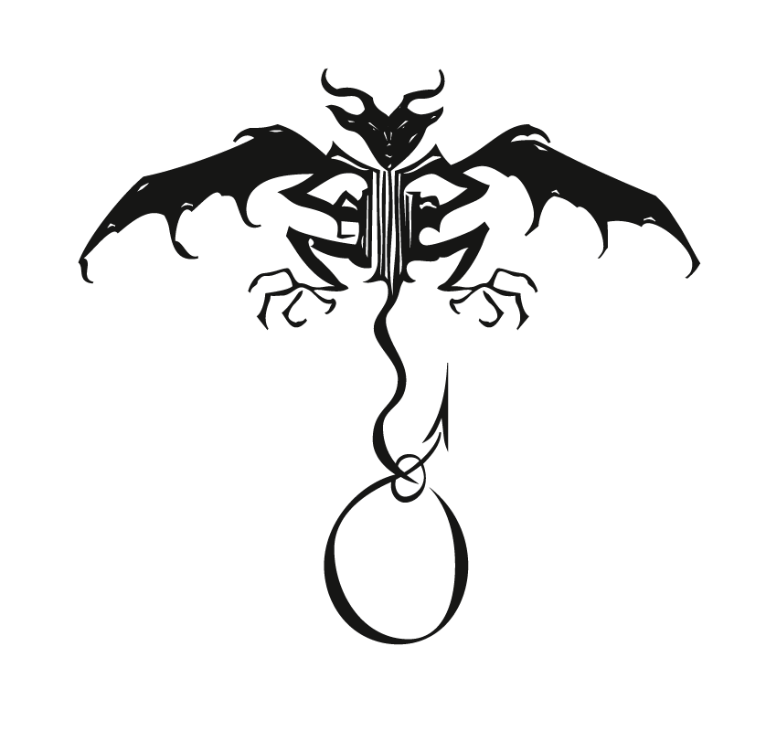
[With all these doubles in mind, the old man begins
to tell his fascinating, holistic, far in time story]
The origin of fennel goes back to ancient times, before Greeks and Roman, as it was easily accessible throughout the Mediterranean Basin. The history of this plant is rich in symbolic values and healing properties.
Mythologically, fennel was believed to be used by snakes, at the end of their shedding, to improve their eyesight by rubbing their face against it. It was firmly believed to be an antidote against poisons, toxic mushrooms, snakes and rabid dogs bites, and that if hung over doors it would ward off evil spirits or ghosts. In Shamanic practice it is used to foresee the darkness in life, as in hidden anger and pain, creeping deaths, diseases or poisonings, etc.
It is undeniable that fennel has always been a plant overflowing with healing powers and beneficial values.
For the Benandanti — also according to to their connections with shamanism — this plant was a sacred tool against the darkness, a plant whose healing power is so strong that can defeat the diabolic evil.
Do you eat fennel and garlic? He replied: Yes, father we do, because they serve against the witches.
The Benandanti were an agrarian cult in the 16th and 17th Centuries. They aimed to live in harmony with nature and at the core of their interest and heart was to keep the harvests and the wild life safe from any form of cataclysm. In order to do so they followed specific fertility rites and night battles. The complexity and symbolism behind these rituals goes beyond modern comprehension.
To be a Benandante was not a choice, it was a happening. In fact, all those that were born with a caul, were automatically members of the group, asked to actively participate at the age of 20, and freed at the age of 40, but many would choose to keep faith to the cause til death.
…and when they reach the age of twenty they are summoned by means of a drum the same as soldiers, and they are obliged to respond.
The battling would recur four times in the cycle of one year, each year at night, on the Thursdays of the quattuor tempora, also known as the Ember Days, a cluster of four sets of three days in the ancient agrarian calendar, roughly around the transition from the old season into the new one. They would fight against the dark witches, using bundles of fennel as weapons, while their enemies would battle with sorghum stalks.
I am a benandante because I go with the others to fight four times a year, that is during the Ember Days, at night. We go forth in the service of Christ, and the witches of the devil; we fight each other.
On the battlefield the Benandanti would fight, play, jump and ride different animals such as cats, rabbits and others. Several Benandanti were standing trial and their testimonies have been recorded and archived. One of their accounts stated that when the witches and the warlocks and the vagabonds return from their “games”, flushed and tired, they would go home to home looking for buckets, if they were to find clear water in them they would drink it, otherwise they would turn the basements upside down, the dark witches would urinate in them too.
In Spring, they would thank for the rebirth of nature and the gift of light. In Summer, they would give thanks for the wheat crop. In Autumn, for the grape harvest. In Winter, for the olive crop. The result of their battle would define the three months following its happening. Whenever they would win a fight, in that season the crop would be abundant and the earth generous.
In case of defeat, famine would be the only prize. And like that, in four days they would fight for all the fruits of the earth, winning fertility.

A representation of the Benandanti. Anonymous, Untitled.
The descriptions in the testimonies of the Benandanti’s Trials, show a very specific fertility rite at the core of their gatherings, based on the agricultural year.
The Friulian landscape is full of heights — from the
crystal clear lakes surrounded by the sharp mountains
of the Alps to the vineyard lined green hills in the Colli
Orientali, from the brisk friendly rivers crossing stone
cities to the naked rock walls overhanging the sea that
can fade into fine sand or clash against boulders — and it
bears the markings of many wars.
Now the realism of their night battles was never put into doubt by the Benandanti, but the landscape of their battles had a dream-like character, an oneiric space-time continuum. The portal of access to the night battles was their deepest sleep, in which their spirit would travel to different areas of the Region, leaving the body behind.
My spirit replied to him, and he added that it was his spirit that went forth, and if by chance while we are out someone should come with a light and look for a long time at the body, the spirit would never re-enter it until there was no one left around to see it that night; and if the body, seeming to be dead, should be buried, the spirit would have to wander around the world until the hour fixed for that body to die.
This separation of body and soul is perceived as a dangerous deathly moment. Nonetheless, the spirit that leaves the body is seen as something undeniably tangible and real: an animal. Animals like cats, rabbits, wolfs, butterflies and mice are mentioned by the Benandanti in their trials when talking about their night travels.
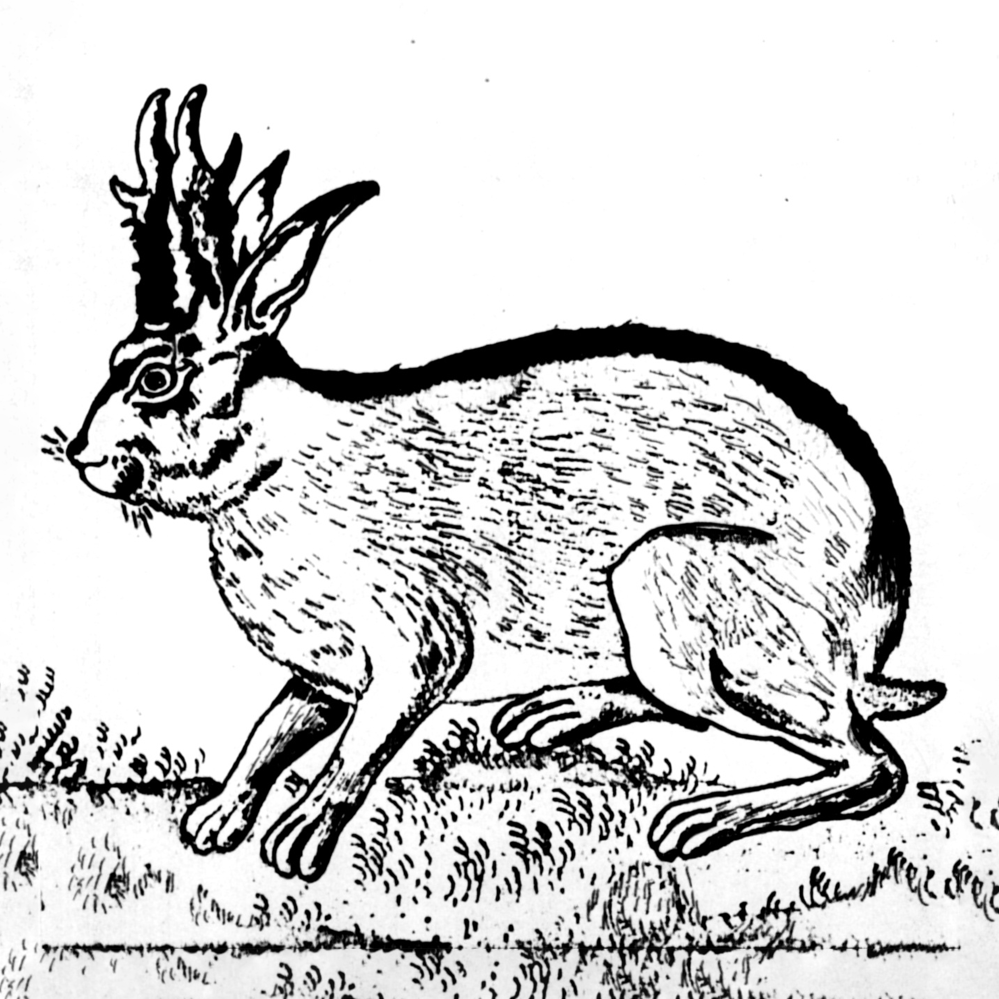
Horned hare engraving from the 16th Century.
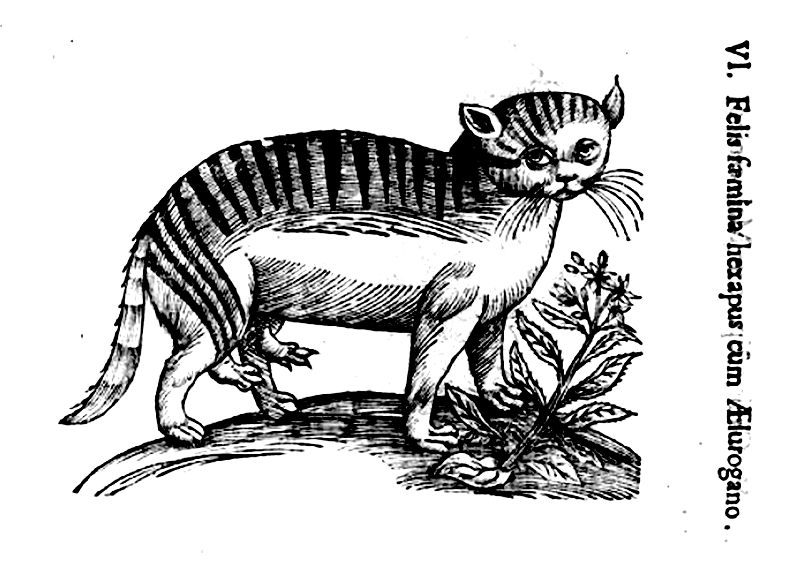
Ulisse Aldrovandi, The Great Cat, 1522/1605.
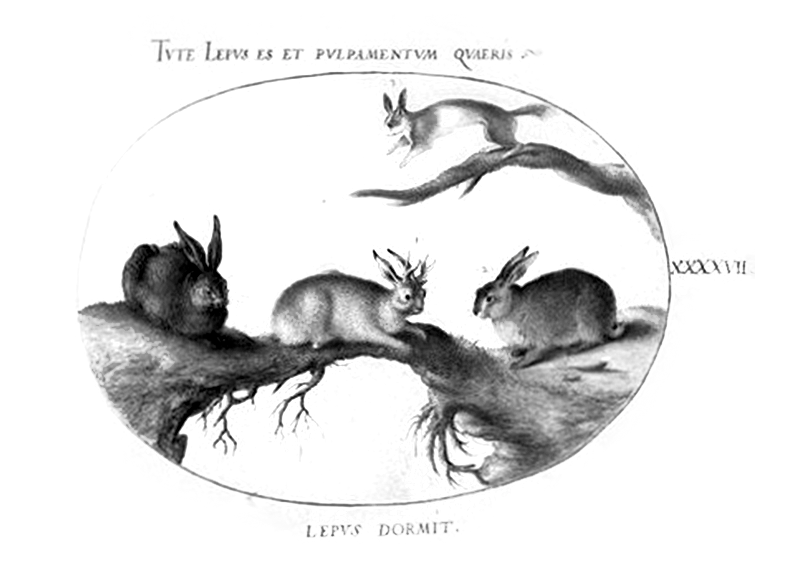
Selection of lagomorphs including horned hare (centre), portrayed in 1580 by Joris Hoefnagel in Plate 77 of Animalia Quadrupedia et Reptilia (Terra).
Analogies with other past fertility rites are glaring — rites such as those of a group of young people who impersonated respectively fertility gods and destruction demons in two ranks, one against the other, beating each other on the kidneys. From the outcome of the battle would magically depend the fate of the earth and the harvests.
Or such as this other rite for the expulsion of the Witch, where an effigy of death would be beaten with sticks and driven away from the village. Later on we see this rites translating more and more into intangible matter, between oneiric and hallucinatory, on a deeper personal plane, but without ever falling into the fantasy genre.

Representation of Benandanti and witches holding fennel and sorghum. Anonymous, Untitled.
All of their manners and rites, from the night spirit travels to the battles for the earth, we must include the participation in processions for the dead — which procured prophetic and visionary powers — form a coherent pattern which immediately evokes the rites of the shamans.
It is therefore undeniable the presence of shamanic traits in this Friulian cult. Shamanism, being an ancient spiritual form of elemental magic, involves a connection with both the natural and the spirit worlds, whose beliefs are those of honouring the elemental spirits (water, air, fire and earth).
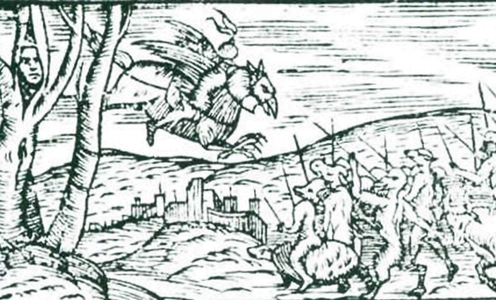
A representation of the Benandanti. Anonymous, Untitled.
This representation showcases again a nightly battle but this time the figures semm more fantastic, a man on what seems to be a flying gryphon attacks an army of animalesque creatures (probably werewolves) that are riding several animals such as a bull and a turtle. On the left of the image, a tree is depicted with a human face.
Aside these rites, the Benandanti took proper physical care of the fields and the harvests. They were aware of the consequences of natural phenomena. I would even venture to say that they were well aware of weather conditions too. Besides, meteorology is an old thing. There are records of Babylonian clay tables with confident weather predictions from the location and look of the stars. Many civilisations used astronomy and astrology in their predictions, since meteorology was embedded in the notion of cosmos. So then why not think that the Benandanti had their own version of agrometeorology.
After all, the Medieval Age was a stage of all sorts of minds and beliefs. The notions of what was and what had been were very present in the practices of physicians, alchemists, philosophers, etc. It was a time in which figures like Robert Fludd — alchemist physician — were still actively striving for a universal science: a combination of aesthetics, mysticism and rational sciences to an all-embracing system of knowledge.
[...] the Hermetic concept as above, so below, the perennial equivalence of macrocosm and microcosm.
In the Inquisitorial records of the Benandanti’s Trials, within the reported facts, there is a key element of magic, not intended as sorcery but rather a form of enchantment. The beauty of this story, and the preciousness of this agricultural peasant society, lays in their truthful authentic connection to their land and ground.
Their longing for the earth’s abundance and health portrays them as protectors of Nature. I believe their biggest source of power is their selfless approach towards the natural world and the basic need of keeping healthy what keeps you alive. I think these passionate stories about the earth can be a big source of inspiration for the people that nowadays, forgot its importance.
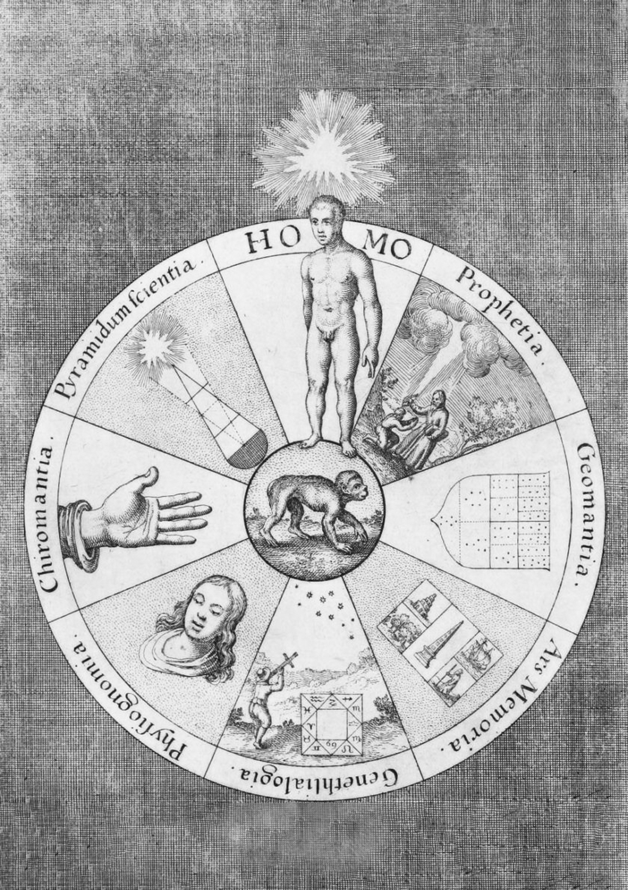
The divinatory arts, according to the English esotericist, Robert Fludd (1574 – 1637). While there appears to be seven divinatory arts, there are in fact eight, for Fludd regards man himself as the main source of the chief method of divination, divine influx: this is why the radiant triangle of the Godhead hovers over the man's head. At his feet is the monkey, no demonic simian, but a symbol of Nature's Ape — that is, Man, who seeks to practise art, or to imitate the creative process of Nature. From Book II of Utriusque Cosmi Maioris, 1617.
The Butchering
of the Essence
and the Colonization
of Knowledge
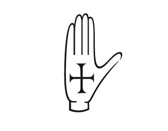
[As we keep walking our path deviates towards the entrance of a dense dark forest. The old man says it reminds him of something, so we enter…]
For those who are not very familiar with the term Inquisition, it was coined way back, around 1231 in France, and it refers to a group of institutions within the Catholic Church whose aim was to combat heresy and religious dissent. Torture and violence were used by Inquisition to obtain confessions from heretics. Among all the nuances of Inquisitions — Medieval Inquisition, Spanish Inquisition, Roman Inquisition — in early modern Europe there was a debate between ‘Protestant Reformation’ and the ‘Catholic Counter-Reformation’ in which the two views were in constant conflict: if the Protestants viewed the Catholics as the terrifying Other, the Catholics firmly believed in their Holy Office as their fortress agains the spreading of blasphemies.
.jpeg)
Levi, Eliphas. Shadow Benediction from The Dogma and Ritual of High Magic, 1854-1856. Print.
The belief in magic and witchcraft was widely spread in pre-christian Europe, and was reflected in the Germanic law. The persecutions of these beliefs by the Inquisition resulted in the revocation of these laws and the end of paganism and folk belief in witches, opening up an era of witch hunts and trials.
The medieval Church distinguished between “white” and “black” magic. White magic was used to ward off storms, protect cattle, or ensure a good harvest by mixing up chants, incantations, and prayers. Black magic was considered malevolent, a type of sorcery that had to do with the Devil and cruel intentions.
The Inquisition’s targets were witches that practiced black magic, their hunt became more prominent during the Renaissance era, perhaps fuelled by the Black Death, the Hundred Years War and the Little Ice Age, all things for whose witches were often blamed. But by the Inquisitorial trials of the Benandanti it is clearly visible that there was more to the Church’s agenda.
The Benandanti easily fall into what the Inquisition called ‘white magic’, yet they were relegated to the Repressive Archives and slowly silenced.
Ginzburg’s book ‘The Night Battles’ starts right away with the analysis of a trial that happened in Cividale in 1575 between the Benandante Paolo Gasparutto and Inquisitor Don Bartolomeo Sgabarizza. These trials, aside from having great descriptive value of their knowledge, they serve as insight into the psychological dynamics between Benandante and Inquisitor, as the questions were growing insistently and the answers were becoming more suggested rather than authentic.
According to the Benandanti, their night battles take place on an oneiric plane where their spirit would travel to the battlefield, leaving the body behind.
This image matched in all the Benandanti’s early trials, but together with their gatherings to fight the witches it ended up being misunderstanding material, the more the Benandanti were opening up, the more the technique of the interrogation changed, becoming openly suggestive resulting into the making of the Benandanti’s confessions conform to the already existing model of the sabbath.
This probably induced the benandanti into finding a defence mechanism, a mask, behind which they would affirm to fight in the name of Christ and God, against those who carried on the Devil’s will.
And he added: Our standard bearer carries a banner of white silk stuff, gilded, with a lion, while the banner of the witches is of red silk with four black devils, gilded.
But this camouflaged attempt was not liked at all by the Inquisition. The agrarian cult, with a purpose in restoring the fertility of the earth, was not understood by the Inquisition, and the cult that acts on behalf of Christ was sharply rejected. Inevitably and unfortunately, the Church shifted towards a third direction: a cult that practiced witchcraft.
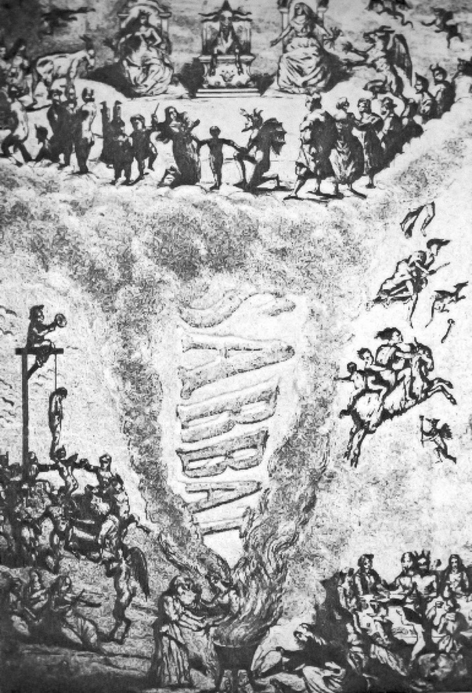
Reproduction of 19th century French engraving of a Sabbat. The word “Sabbat” in the smoke from a cauldron in the center, witches and devils in a circle around enthroned goat at the top, gallows on left and witches flying on a broomstick and goat on right.
Up to 1620, the so far narrated features of this cult were recorded all around Friuli, in a seemingly stable way.
In the timeframe of 50 years, the beliefs of the Benandanti, with their ambiguous features, are spread all around the region — an ensemble of beliefs and rituals transmitted mostly by mothers, who are the repositories of these traditions. The passage of this cultural heritage creates an emotional situation that turns those beliefs into a strong and resistant familiar bond.
No Benandante knew that the upcoming phase of the Inquisitorial practice would actually...
...pave the way for a subsequent period of swift, almost violent change.
In each Trial, the Inquisitors became more and more insistent, asking questions like
Was there dancing, music, singing or eating in that field, were there beds, trees or other things? or whether when he went forth in the form of smoke, as he had said, did he first anoint himself with any sort of unguent or oil, or did he pronounce any words?
They would strain the benandanti with pressuring suppositions, that were — in the majority of the cases — hard to recant or even free from. The Inquisition keeps on suggesting the image of the Sabbath when questioning the Benandanti — somehow believing of predetermining their behaviour and answers — trying to adapt the testimonies of these people to the patterns of sorcery.
As if this was not enough, the pressure from the dominant culture was not restricted to the Inquisitorial sphere. The mentality of the society around them was starting to change, and was accusing the Benandanti of the same devilish practice. The priests of the villages began to point the index finger against the Benandanti — rather than the witches — stripping them from any mystical power, viewing them as sources of mischief, trouble and scandals.

Baldung, Hans. The Witches. 1510. Print. The interest in witchcraft in the German-speaking countries was especially strong at the beginning of the sixteenth century, heralded by the publication in 1487 of the Malleus Maleficarum (The Witches’ Hammer) by Heinrich Kramer and Jacob Sprenger, which was reprinted fourteen times before 1520.
Trapped in between these two fires, the Inquisition and the Society, the Benandanti can no longer hold their peace. A man named Marchetto, during an interrogation exclaims:
He (priest) lied about this, because we were created by God with free will, and no one could compel a man if this man did not want it
And like so, he had defined the breaking point between the dominant culture and the unreflective, spontaneous culture of the Benandanti. He merged free will together with the cryptic uncontrollable selfless need that demanded them to go fight on the nights of the Ember Days.
What sped up this process was also the inability of the Inquisition to comprehend and accept such cult, whose agricultural/agrarian definition was not taken into consideration at that moment in history. The benandanti tried many times to affirm their practice and their healing abilities, even by reinforcing their “christian mission”, but there has been a question mark on their heads since the very beginning, until the very moment in which a woman from Latisana, Maria Panzona, was arrested on charges of stealing napkins, shirts and other objects that were kept as charity in the Church of Santa Croce.
This woman was indeed a witch, and when the judge asked her to reveal her wicked acts, she reacts by stating:
I have never performed spells or charms, because I am a biandante, and benandanti are all opposed to witches and warlocks.
By the unjust appropriation of the cult’s identity, she fuels the desired long-term attempt of the Inquisition to absorb the image of the Benandnati into the one of Sorcery. It was Maria who recognised in the night battles of the Benandanti the image of the Devil’s Sabbath, spontaneously establishing the Inquisition’s agenda.
Once they avowed their participation in the sabbath, even if there remained indecision and hesitation in their attitude, the benandanti emerged, forced by the choices thrust upon them, from the ambiguous position which had made them both the objects of persecution by the inquisitors […] and of hatred by the witches. Little by little they had become what they had always been expected to be: witches.
It was Ginzburg itself, in 1979, that asked Pope Giovanni Paolo II to consider the opening of the Archives to the public eye. It took them 20 years to open up the rooms with the older documents, but the Archives with documents from the 20th Century still stay closed.
The Inquisition committed terrible crimes in the name of God, they persecuted, tortured, killed, burnt and destroyed anything or anyone that could have posed a threat to the Catholic Church. Their blind beliefs and violent acts are a pure representation of religious colonisation of knowledge and cultures.
In 1559 the Inquisition created the Index Librorum Prohibitorum, a collection of books, subtracted from the public, that were considered heretical and against morality. The removal of these book from the public domain had consequences, not only the Church was colonising knowledge, but also history.
All history has been colonized, and this means that we have always been told one aspect of it. Colonial history is arguably our whole history, and as Michael Taussig wrote, the colonial experience can be reduced to individual perspectives on terror and the space of death (a place of irrationality and learning), fragmented in that the perspective of one person is alienated from that of the Other.
Death is used as an object for learning, therefore people do what they do because tempting desires appear to them. Desires such as power. Colonial history teaches people violence and rhetoric in order to acquire power and control. It doesn’t matter what methodologies and strategies are to be used. Therefore, there is a continuous need for an enemy throughout history, an enemy to justify the creation and establishment of Institutions. Without an enemy of the State like terrorism or conquerors, there is no reason for the State to exists; without the Devil, there is no Christianity.
Therefore I must agree with Taussig’s view on the definition of history: it is not a mere collection of different stories, but rather a game where the winners get to write the so-called dominant narrative.
Nowadays, in this now-more-than-ever hierarchical Society, it is us individuals that can define power.
Our actions, words and decisions, define now more than ever who gets the power. We tend to view the top of our society as absolute and incontestable — a separate organ that creates infallible strategies to apply to our lives — what instead we should do is doubt every power-state and draw our own conclusions whether this sources are trustable or not, whether what is discussed is valuable or not.
If history has taught us something is that there has always been a quest for absolute power, since ancient times, and history teaches that the game plans behind these quests have improved in craftiness and deviousness, to an extent that made these strategies hidden to the public eye.
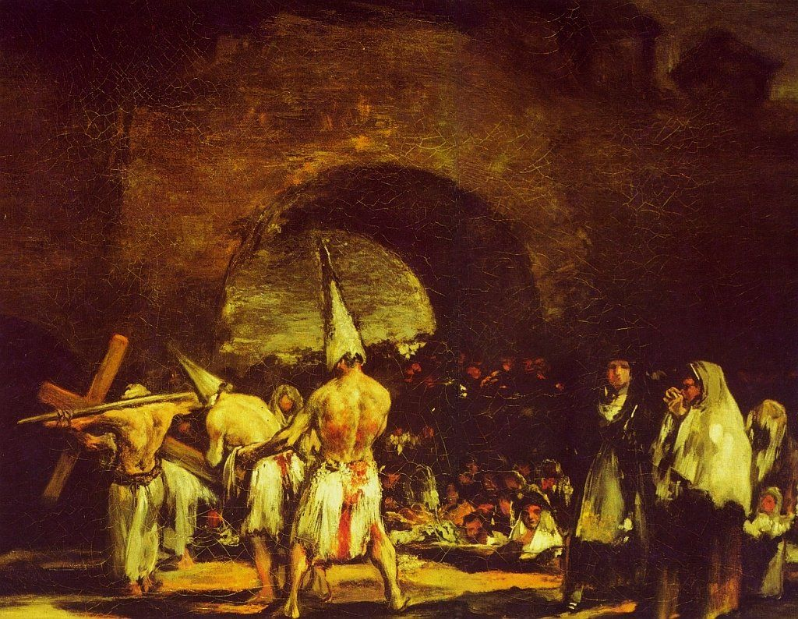
Francisco, Goya. Penitencias. Unknown date. Painting.
A Theatre
of Specularity
and Counter
Interpretations
of Being
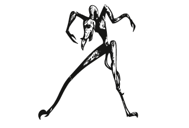
[It’s getting dark, and we cannot seem to
remember the way back home… Did we get lost?]
It’s enchanting, isn’t it?
These people, these rituals…pieces of the past.
These stories seem so far from us, yet so potentially close. They bring back the modern men to their old needs. It’s a reminder of consciousness, for all the connections we’ve lost throughout time, and will still lose if we don’t act fast.
I am positively convinced that these stories of cultural erasure but never surrender, survived through times against all odds not to simply be reminders of us , but to be dice tosses for a chance at redemption.
The teachings of these cults are not magical nor out of our sphere of comprehension, that’s not how I see them, their essence is still very applicable nowadays, and an urgency to do so ahas been occurring everyday, an urgency whose hunger for justice and freedom requires fleets of vessels ready for change.
When I read about the Benandanti I see a bright nucleus made of values, those of respect, loyalty, community, all existing within an embrace to the earth.
It is fundamental to study societies like these, that lived in ‘osmosis’ with their land, because we can deeply learn from them.
The Benandanti’s essence is certainly holistic.
They have incredible care for nature and its living creatures and a pressing desire to re-establish the fertility of the earth every time they go into battle, doing so in a spiritual way, which involved training their minds into this process, as well as their bodies for everyday tasks. They were healers, they knew natural and spiritual medicine and they were all part of a community. It was indeed a society on itself, at the time known by many.
I was told by an Italian man who deals with pranic healing — and prefers to remain anonymous — that indeed the knowledge of the Benandanti wasn’t lost and that a few people were still practicing their rituals.
So nowadays, in 2020, there are still people that, silently, are fighting against the ‘dark witches’.
These people are very secretive and probably rightfully so, unfortunately these kinds of beliefs and knowledge grew so far apart from common uses and ideologies and their essence and complexity can be very hard to comprehend by anyone who doesn’t feel some sort of connection to these matters and topics.
I believe they prefer to remain in secret because of the “fragility” of their actions which might fall into popular misunderstanding and therefore lose their value. Nowadays anything that cannot be scientifically proven and goes beyond the tangible world must live in the undergrowths of the earth and its energies. Energy is real but not easy to prove.
This man gave only one comment on these contemporary Benandanti, a comment tha intrigued me.
"I cannot totally agree with their methods, as they perpetuate dualism in its purest form."
Now, before investigating upon this sentence — in order to understand what would the face of contemporary society look like if certain types of knowledge would have not only survived throughout time but being applied on a bigger scale — I must first analyze the dynamics of our present society.
The Benandanti, as well as many other nature and spirit related cults, give us a hint for a counter interpretation of being. Their ritualistic awareness and care for the living things may seem stranger thing to many of us, which suggests that an abyss exists now between the “I” and the rest of the alphabet. Mankind’s deepest cares and interests are shifting centred, separating the self from the outer world.
As I mentioned in Chapter Zero, when referencing Anselm Franke’s Great Divide , an invisible power exists and it defines negatives and positives of our society,
creating polarities within normality. I see our society
as a theatre of specularity, in which people are mirror-
ing their idols, mimicking their actions and behaviours, while rejecting new ideas and opposite possibilities, endorsing separation.
It isn’t in progress and evolution that we are living right now, it is partition, negative space. We are drifting away from the natural world into this digital map that is testing our minds, twisting our desires, changing our way of thinking.
This advanced, sanitized, online, errorless, enhanced map has no space for motion, nor diversity.
It is flat, even, without magic or margin of surprise.
The problem with contemporary society is the stillness: the emotional, physical and spiritual immobility. We feel detached from things that provide us with vital
energy. The neverending caustic quest for power — together with the advancement of technology and the unstoppable desire for capital — play a major role in this process of detachment, being the hands that pull the strings of this puppet show that we consider our life.
As strong as the division of society seems, it is as well groundless. Society’s individual identities (people) make up present reality. Michael Taussig, in his book Shamanism, Colonialism and the Wild Man: A Study in Terror and Healing, is often using the expression fictional reality , he uses it to convey the idea that realities as well as social and historical narratives, are constructions of people.
In the same way that whites have robbed other populations of their cultures — exterminating their offspring and extinguishing their traditions — people’s choices are molding the frames of our reality, simply by making decisions. We forget that our role within reality is active, not passive. Reality isn’t given or decided by higher forces, it is just a hall of mirrors in which we walk through.
We get to decide about every aspect of life, wheter it is a smaller task or a bigger project, wheter it involves us or others. Acknowledging decisional power, and demanding freedom within it, creates responsibility, wheter we accept it or not.
On the note of decisional power I would like to introduce Elizabeth Povinelli, who in the first chapter of
Geontologies, investigates the differences between types of power throughout history and their consequences on society. When talking about the distinction of life from death, which is the key factor for the assertion of sovereign power, biopolitics and necropolitics, Elizabeth states that:
Starting from the 18th century, the anthropological and physical sciences came to conceptualize humans as a single species subject to a natural law governing the life and death of individuals and species.
But she also must state that these statements are now being perceived and experienced through a new drama, a drama that begins and ends within what she calls the Nonlife —
Namely the extinction of humans, biological life, and, as it is often put, the planet itself.
— which must make us think of a time before the presence of individuals and species, a time in which the Earth was alone yes, but I must say, untroubled. Due to the conceptualization of humans and the self given apex of our being, we live in a world in which...
Clearly, x humans are more important than
y rocks.
This concept creates a pedestal for human cognition on which our own judgement prevails that of other species and creatures. Now, I cannot find beauty nor reason in this statement, I find it incredibily narcissistic and rewarding of a self-established condition.
Anyhow, allowing this statement to be true means the identification, and therefore its acceptance, of an individualistic power that rather than be resolving, it creates dissent, stupidity, blindness and oblivion, all aspects of a society grounded in polarity. Polarity (or duality) is a term that refers to any manifestation of two opposing attributes, tendencies, or principles.
On an everyday experience, everything is binary — everything we know has an opposite equivalent and our simplest thinking is based on the fact that feelings,
things and actions can be diametrically opposed to each other. Redirecting the thoughts towards the statement given by the anonymous men, I find myself agreeing with him. In this case, fighting the evil nowadays means clinging to the polarity of a world that insist within the duality of things.

Selection of frames from Disney's animation serie "Silly Symphonies, Flowers and Trees". 1932.
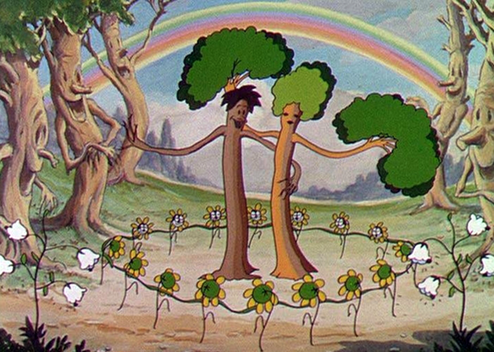
Final frame from Disney's animation serie "Silly Symphonies, Flowers and Trees". 1932.
The most striking thing about Flowers and Trees is the sense of community within nature that is presented so effectively. The setting is simple: it begins in a forest at dawn and all of the flowers, trees, and mushrooms are waking up. This is, of course, all presented in beautiful Technicolor: bright green bushes and grass, lovely brown mushrooms, and blue birds.
For being almost a century old, this animation is still
very readable and adaptable to nowadays society.
I believe the message of this animation is open, anyone can take away from it whatever message they felt stronger.
To me it speaks about greed and selfishness, and how it always ends up badly for those who try to get everything they want without real, honest reasons behind it. This short can be a good mirror for contemporary times.
An Unescapable Power
I think we can all agree that dualism is a quite primitive concept: love, hate, visible, invisible and so on and so forth. The Benandanti’s actions and rituals of four centuries ago were based on their belief of having a 50/50 percent chance at winning or losing.
Even if they gave all their heart and soul on the battlefield, the issue with their battles was the duality of the result (and therefore anything that includes two opposite factions) which may have been a pure coincidence or a matter or luck.
When trying to understand how our society could look like if this knowledge was currently widely active, I play a game of puzzle attempting to fit the Benandanti within our society. Their essence and motivations are rare in a world like ours and therefore extremely precious, but I must admit that I do find their practical methods clashing with contemporary times where tools have changed and notions have been renewed. The establishment of strong dualism in our contemporary society can be dangerous and scary.
It decreases chances and it is so affirmative and unescapable that there is no room for doubt or change within this division, you either are the one that fights against the system, either you’re the one that follows
it regardless.
This division is bringing people apart, nowadays it’s so easy to get into an unwanted nor predicted discussion with a person that might be simply thinking differently.
But just like a prism, there can be many faces and views of the same subject and topic, and most of the time, since they share the same essence they can be interweaved and combined into new solutions that don’t necessarily have to raise from one side of the moon only.
In this moment of uncertainty and opposition we should recognise that clash arises from division and has to be placed in polarity, therefore it might seem wiser to drop all battles and confrontations in favour of a return to unity and cohesion.
I am profoundly pluralist, I believe that change and evolution can be born from the merging of many people’s intentions. Our faiths are deeply interconnected, as opposed to depending on heroic individualism, which only leads to the creation of more idolatry.
Cohesion is resolutive: power comes with responsabilities and community comes with respect.
To me, the enchantment of the Benandanti lays in their willingness to go to battle for the Earth and risking their wellbeing to ensure the fertility of the lands — not only for themselves, not only for the people around them, but genuinely for the planet itself.
It is a sequence of selfless actions and pure uncontaminated intentions. Keeping safe and healthy anything that gives us life shouldn’t be a topic of discussion, the earth’s resilience can only go so far.
So who is, or can be, the correspondent of a Benandante today? Is it a modern alchemist that tries to fight for change on their own? Or is it a daring group of activists, who try to reach every corner of population? Who can accept responsibility without running from it?
Epilogue
[So our journey ends. We have been walking all night through the forest, but we can finally see the sun rising shy]
Throughout this thesis I have been talking about Shamanism, spirit travels, night battles, religious prosecution, colonization of knowledge, the writing of history, the erasure of history, separation and cohesion, decisional power... All notions connected to the fertility of the Earth.
The cult of the Benandanti is a container, it holds historical references, ancient spiritual approaches and suggestions for the ‘new world’. Their story is the vessel on which I jump on board, and while navigating through time and space, I create metaphors within their moving portrait.
The Fertility of the Earth in the title carries different meanings. It is not only highlighting the importance of a healthy land and fruitful soil — which is the main teaching of the Benandanti — it addresses everything around it: how to take care of it, where to position yourself within the earth and society, but most of all the word fertility is for me a compass, that can point you towards many directions.
Fertile is the soil as well as our relationship
with it.
I don’t want to address human fertility as a reproductive capacity, but rather as an ability embedded within our rationality and consciousness for which we do care about the planet and the other species, an ability that makes us embrace the responsibility that comes with our decisions, an ability that allows mankind to properly function as a unified ensemble, an ability that makes us capable of recognising, and choosing, the meaningful aspects of life.
The moment in which the whole mankind will once and for all stop caring about the wellbeing of the existing around them, the world — and its soil — will loose their value, slowly erasing the identity of a population that will have no rights to exist.
2021
Bachelor Thesis written by
Emma Benozzi,
Graphic
Design Department, KABK